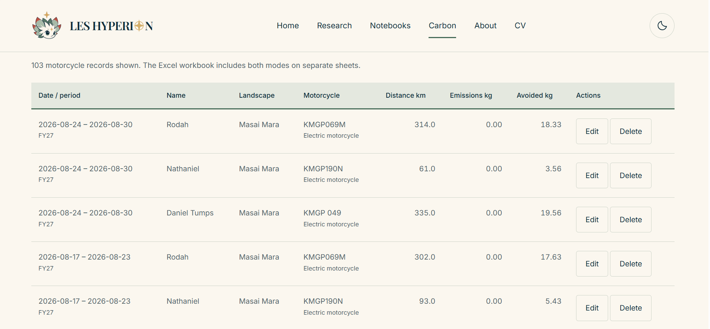
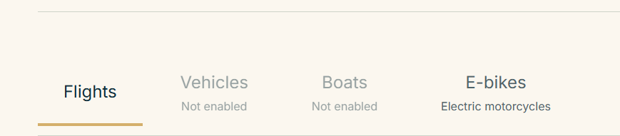
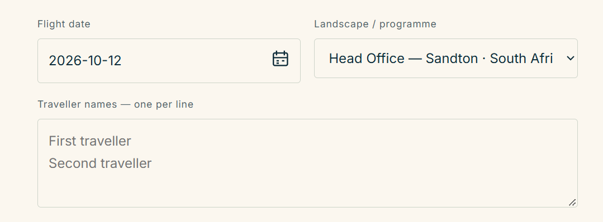
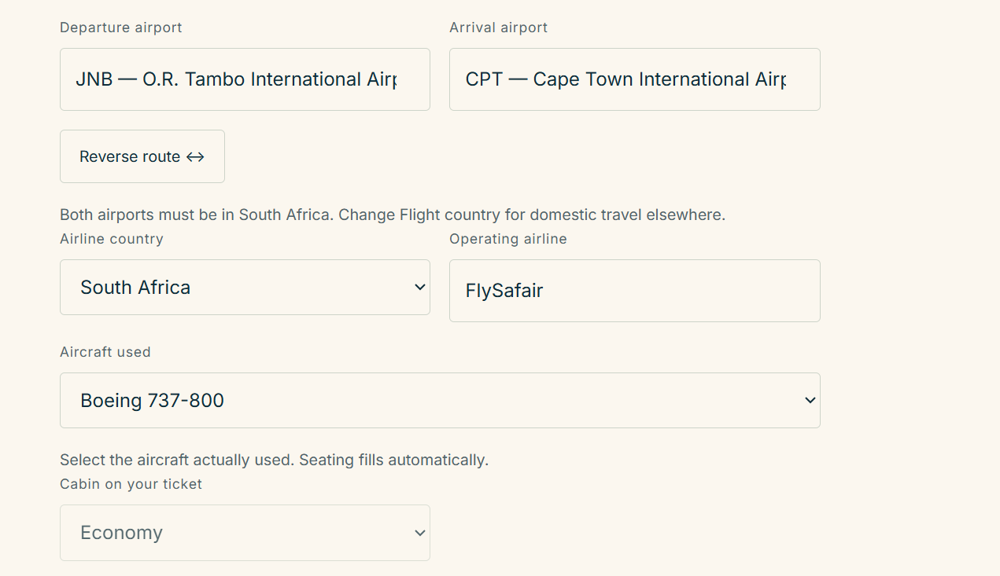
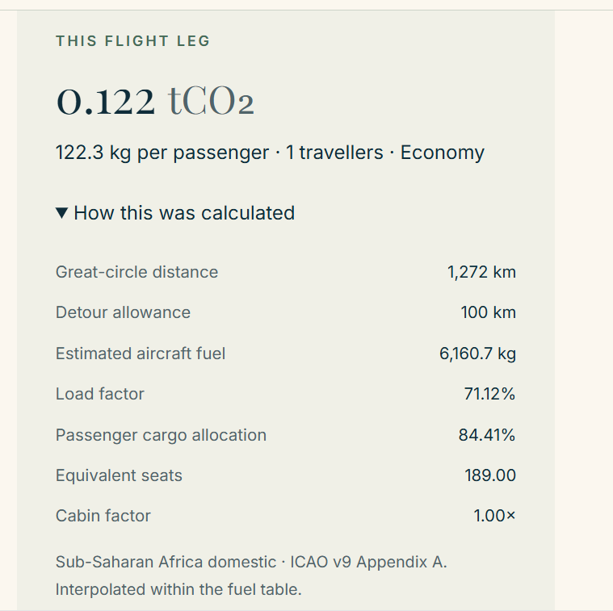
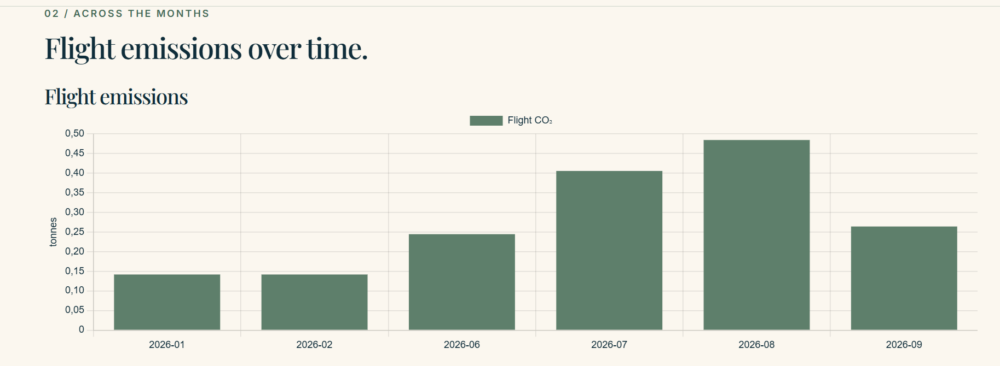
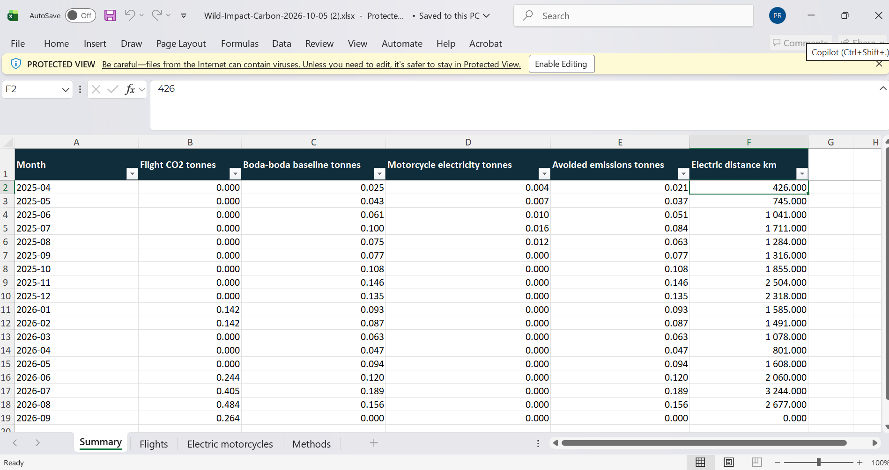
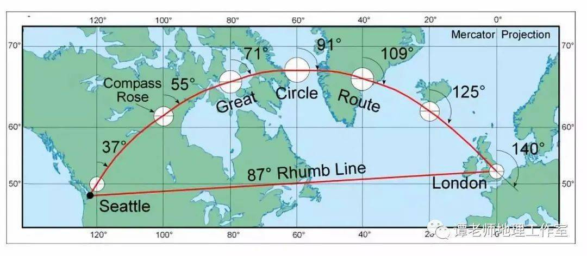

Route-based estimates
Records the traveller, landscape, date, route, airline, aircraft, cabin and passenger count. Flight emissions are estimated from aircraft fuel curves and allocation factors.
Wild Impact Tracker · Technical presentation
How the aircraft module turns a route, aircraft reference data and passenger details into an estimate of flight-related carbon dioxide emissions.
01 / The tracker
The Wild Impact Tracker is being developed to record travel activity consistently across Wild Impact landscapes. This presentation focuses on the aircraft module; the e-bike module was presented separately. The tracker replaces scattered manual calculations with a repeatable workflow and a common record structure.

Records the traveller, landscape, date, route, airline, aircraft, cabin and passenger count. Flight emissions are estimated from aircraft fuel curves and allocation factors.
Stores records in the local browser, displays summaries and charts, and supports Excel export. SharePoint synchronisation through Power Automate remains planned work.
02 / Why build it?
Use the same fields and reference tables across projects and landscapes rather than maintaining disconnected spreadsheets.
Users enter activity details; the tracker applies the calculation rules and records the resulting estimates.
Monthly summaries and Excel export make records easier to review and reuse.
The same recording pattern can later support vehicles, boats and additional emission calculations.

03 / User workflow
The user-facing workflow is deliberately short. The technical work happens behind the form, using reference data bundled with the site.
Select Aircrafts for flight records or E-Bikes for ranger travel.
Record the date, person involved and the landscape associated with the trip.

For flights, choose domestic or international travel, departure and arrival airports, airline, aircraft and cabin details.

The tracker applies the model, displays the calculation steps and saves the record in the browser used to enter it.



04 / Reference data
The tracker uses local JSON reference files to populate the interface and supply model inputs.
| Reference file / source | Role in the tracker |
|---|---|
airport-reference.json | Airport identifiers and locations; approximately 10,533 records. |
aircraft-reference.json | Aircraft types and specifications; approximately 86 types. |
airline-reference.json | Airline and operator choices; approximately 83 entries. |
flight-configurations.json | Published cabin-layout profiles, seat counts and seat-space factors. |
| ICAO fuel curves | Reference fuel consumption by aircraft and distance, drawing on ICAO methodology versions 9 (2014) and 13.1 (2024). |
landscape-reference.json | Wild Impact landscape choices and their associated countries. |
05 / Calculation 1
The distance between the departure and arrival airports is calculated as a great-circle distance (GCD): the shortest path between two points on a sphere. It is not the same as a rhumb-line distance, and it is not a record of the aircraft's actual flown track.

A fixed allowance is added to approximate additional distance associated with routing, holding and operational detours. It is a model assumption, not a measurement of a particular flight.
| Great-circle distance | Allowance added |
|---|---|
| Less than 550 km | 50 km |
| 550–5,500 km | 100 km |
| More than 5,500 km | 125 km |
06 / Calculation 2
ICAO fuel curves provide reference fuel values at specified distances. If the adjusted route distance falls between two reference points, linear interpolation estimates the fuel value between them.
x is the required distance; x1 and x2 are the lower and upper reference distances; F1 and F2 are the corresponding reference fuel values.
Suppose the lower reference point is 250 nautical miles (nm), with fuel consumption of 2,703 kg. The upper point is 500 nm, with fuel consumption of 3,788 kg. We want an estimate at 300 nm.
The required distance is 20% of the way through the reference interval.
This is the difference between the two reference fuel values.
Take 20% of the fuel difference.
Add the interpolated increment to the lower reference value.
Method reference: ICAO Carbon Emissions Calculator methodology, version 13.
07 / Calculation 3
Estimated fuel consumption is converted to CO2 and allocated across the flight's passenger capacity, passenger load and cabin configuration. The cabin factor represents the space allocation associated with the selected cabin class.
Fuel is expressed in kilograms. The factor 3.16 converts a mass of aviation fuel into the corresponding mass of CO2 under the model's combustion assumption. Seat count, load factor and cabin allocation distribute the estimate rather than measure an individual's marginal fuel use.
Converts estimated fuel mass to estimated CO2 mass using the tracker’s emission factor.
Approximates the occupied passenger capacity over which emissions are allocated.
Accounts for the share of fuel/emissions assigned to passenger transport under the selected methodology.
Adjusts the passenger allocation for the space associated with the selected cabin class.
08 / Calculation 4
The passenger count scales the per-passenger estimate to the number of people represented by the record. The tracker then converts kilograms to tonnes for reporting.
09 / System architecture
The browser handles data entry and local calculations. A separate synchronisation pathway is planned to move selected records into Wild Impact’s SharePoint-hosted Excel workbook. That integration is not yet implemented.
10 / Boundaries and next steps
Flight CO2 estimates, aircraft fuel-curve interpolation, passenger and cabin allocation, local browser records, summaries and Excel export.
Central synchronisation through Power Automate, vehicle and boat modules, direct flight fuel measurements, and non-CO2 aviation effects.
The immediate next step is to complete and test the synchronisation pathway, including authentication, duplicate handling, error reporting and a clear policy for which records are sent to SharePoint.